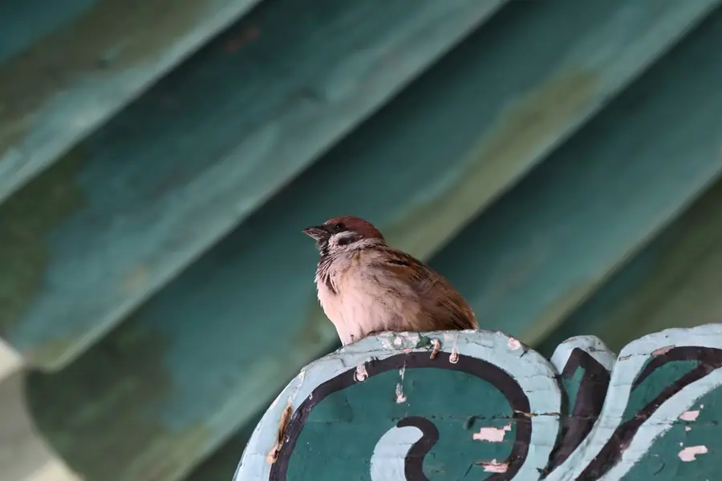

Yuncheng Airport Transfer & Private Car
Licensed professional driver in Shanxi's southern gateway city. Fixed price. Explore the "China Dead Sea" salt lake, the legendary general Guan Yu's hometown, and the Yellow River's historic eastern bend.
Yuncheng in Pictures
Real scenes from Yuncheng — landmarks, streets and everyday life.

Yuncheng at a Glance
Yuncheng (运城) — "Transport City" or "Salt City" — is the southernmost city in Shanxi Province, China, sitting on the great bend of the Yellow River (黄河) where it curves south toward Henan and the Great Central Plains. The city is centered on the Yuncheng Salt Lake (运城盐湖) — one of the world's largest inland salt lakes — and is famous as the birthplace of Guan Yu (关羽), the legendary Three Kingdoms general worshiped across East Asia.
The Salt Lake — China's "Dead Sea"
The Yuncheng Salt Lake (运城盐湖) is the defining natural feature of the city — a vast inland salt lake covering approximately 132 km², one of the world's largest inland salt lakes. The lake's high salinity (similar to the Dead Sea) allows visitors to float effortlessly on its surface — earning it the nickname "China Dead Sea" (中国死海). The lake's pink and turquoise colors, particularly visible in summer when the salt concentration peaks, have made it a popular photographic destination.
Salt production in the Yuncheng area dates back over 4,000 years — to the early dynastic period when the salt from this lake was one of the most important commodities in ancient China, traded along the Yellow River routes that connected the Central Plains to the north. The ancient salt trade routes are among the origins of Chinese commercial civilization.
Name Origin
The name "Yuncheng" (运城) — "Transport City" or "Salt Transport City" — reflects the city's historical role as the collection and transport hub for the salt produced at the lake. During the Spring and Autumn and Warring States periods, salt from Yuncheng was transported by the Yellow River and overland routes to the central plains. The city developed as a salt trading and distribution center.
Guan Yu — The Sainted General
Yuncheng is the birthplace of Guan Yu (关羽, 160–219 CE) — the legendary general of the Three Kingdoms period who became one of the most venerated figures in Chinese folk religion, Taoism, and Confucianism. Known as "Guan Gong" (Lord Guan) or "Guan Di" (God of War), Guan Yu is worshiped across East Asia — in Chinese temples, Japanese businesses, Korean shrines, and Vietnamese communities. His image appears in police stations, shops, and homes throughout the Chinese-speaking world.
The Guandi Temple (关帝庙) in Yuncheng — in the town of JingLe (解州) near the city — is one of the largest and most important Guandi temples in China, drawing worshippers and tourists from across East Asia. The temple complex, with its soaring wooden halls, ancient cypress trees, and rich historical artifacts, is a major cultural heritage site.
Geography & Location
Yuncheng is located in southern Shanxi Province, on the eastern bank of the Yellow River. The city sits on the great southward bend of the Yellow River — where the river turns sharply south toward Henan Province and the Great Central Plains. Yuncheng borders Henan Province across the Yellow River to the south and Shaanxi Province across the river to the west. The city is approximately 330km from Taiyuan (Shanxi's capital) and 280km from Xi'an.
Top yuncheng Attractions
Visit the Yuncheng Salt Lake, Guandi Temple, Yongle Palace (famous Yuan dynasty murals), and the Guanque Tower.
Popular Yuncheng Routes
Fixed-price private car service for Yuncheng's most popular journeys.
🌊 Yuncheng Railway → Salt Lake Hotel
From ¥197($27.75)~12 km · 25 min · Economy/Business/MPV
Yuncheng Railway Station is the main arrival point for high-speed rail visitors from Taiyuan (90 min), Xi'an (2h), Zhengzhou (2.5h), and the national network. Your driver meets you at the station exit with a name board and drives directly to your Yuncheng hotel near the salt lake or city center.
🌊 Salt Lake Float Experience
From ¥197($27.75)~8 km · 2–3 hours · Business vehicle
Your driver takes you to the Yuncheng Salt Lake where you can experience floating in the ultra-salty water — the "China Dead Sea" effect. The driver waits while you enjoy the lake and can arrange a changing room and shower facilities. Best in summer when the pink and turquoise colors are most vivid.
🛕 Guandi Temple Full-Day Tour
From ¥494($69.58)~35 km · 5–6 hours · Business vehicle
Your driver takes you to the Guandi Temple in JingLe (20km from city), then to Xiaoyao Village (Guan Yu's birthplace), and back via the salt lake. The full circuit covers the city's most important cultural heritage sites. The driver waits at each location and can arrange an English-speaking guide at the temple.
🌊 Yellow River Day Trip
From ¥197($27.75)~80 km · Full day · Business vehicle
Your driver takes you south to the Yellow River at Yongji — where the river makes its great southward bend — with stops at the riverbank, historic crossing points, and a riverside village. The view across to the Shanxi Plateau on one side and the Central Plains of Henan on the other is spectacular. Combine with a local fish lunch at the riverside.
Transparent Pricing in Yuncheng
Published rates, no estimate games. Check the numbers yourself before you book — and the price you see is the price your driver is paid from.
Fixed Price List — 运城 (Yuncheng)
Published rates from our 2026 quote sheet. Renminbi first, USD for reference at 1 USD = ¥7.10. Every price below already includes tolls, parking, driver service and free airport waiting time (up to 60 minutes after your flight lands) — nothing is added on the day.
🛬 Airport & Intercity Transfer
One flat fare for airport pickup, drop-off or city-to-city — intercity costs the same as the airport run. 35 km and 60 minutes included; beyond that we charge by the minute and the kilometre at the rates shown.
| Vehicle | Seats | Bags | Fixed fare | USD | Beyond 35 km / 60 min |
|---|---|---|---|---|---|
| 4-seat Economy Sedan | 4 | 2 | ¥197 | ≈ $27.75 | ¥0.99/min · ¥4.42/km |
| 4-seat Comfort Sedan | 4 | 2 | ¥281 | ≈ $39.58 | ¥1.1/min · ¥4.89/km |
| 6-seat Business Van | 6 | 3 | ¥346 | ≈ $48.73 | ¥1.17/min · ¥5.2/km |
| 8-11-seat Business Van | 11 | 4 | ¥593 | ≈ $83.52 | ¥1.52/min · ¥6.76/km |
| 12-18-seat Minibus | 18 | 4 | ¥686 | ≈ $96.62 | ¥1.7/min · ¥7.54/km |
| 19-55-seat Coach Bus | 55 | 5 | ¥718 | ≈ $101.13 | ¥1.93/min · ¥8.58/km |
🚗 Hourly Private Charter
Book the car and the hours, keep the car for the day. Unused kilometres can be carried into the next tier, so a long day never turns into a penalty. The driver stays with you — you set the stops.
| Vehicle | 2h / 35km | 4h / 50km | 6h / 75km | 8h / 100km | 10h / 125km |
|---|---|---|---|---|---|
| 4-seat Private Car | ¥234 | ¥377 | ¥494 | ¥572 | ¥598 |
| 6-seat Business Van | ¥299 | ¥494 | ¥637 | ¥741 | ¥780 |
| 8-11-seat Business Van | ¥431 | ¥711 | ¥917 | ¥1067 | ¥1123 |
| 12-18-seat Minibus | ¥517 | ¥854 | ¥1101 | ¥1280 | ¥1348 |
| 19-55-seat Coach Bus | ¥620 | ¥1024 | ¥1321 | ¥1537 | ¥1617 |
Why travellers book Yuncheng with Chinawheely
Six things you get with every booking — in Yuncheng and across all 346 cities on the platform.
Licensed travel agency, not a ride-hail app
Chinawheely is a registered travel agency (L-HUB-101603). Your booking is a travel contract with a licensed operator — not a broker handing your number to whoever answers the phone.
One locked price, shown before you pay
The price you see is the price you pay. Tolls, parking, driver service and airport waiting time are already inside it. No surge pricing, no meter, no cash-on-the-day surprise.
Flight tracked, waiting time on us
We watch your flight number in real time. If it lands late or is delayed, your driver shifts with it and the waiting time stays on us — not on your bill.
A licensed driver who knows the city
Every car is driven by a professional local driver who knows the routes, the shortcuts and the parking that actually works near the attractions — with English communication and a name board on arrival.
Free changes up to 48 hours before
Plans move. Reschedule or cancel any booking free of charge up to 48 hours before your scheduled pickup, straight from your confirmation link.
A real human on WhatsApp, 8AM–12AM Beijing time
One message reaches a person who can re-price, re-route or re-plan your trip on the spot. No ticket queue, no chatbot loop.
Book Yuncheng at the published price
Pick your vehicle, see the fare line by line, and pay by PayPal or Alipay. Free changes up to 48 hours before pickup — or ask on WhatsApp and we will hold a car for you.
The quote is valid for 48 hours, and you can change or cancel free up to 48 hours before pickup.
Getting to Yuncheng: Airports & Railway Stations
Getting to Yuncheng by air, rail, or road
🚄 Yuncheng Railway Station
🗼 Yuncheng Railway Station (运城站) & Yuncheng North (运城北站)
High-speed rail hub · Connections across central China
Yuncheng is served by Yuncheng Railway Station (运城站) for standard rail and Yuncheng North Station (运城北站) for high-speed rail. High-speed services connect to Taiyuan (90 min), Xi'an North (2 hours), Zhengzhou (2.5 hours), and the broader national high-speed network. There is no commercial airport in Yuncheng — visitors arrive by high-speed rail or private car. Pre-book your private car to meet you at the station exit.
✈️ Nearest Airports
⛰️ Xi'an Xianyang Airport (XIY)
~260 km · 3 hr drive
Xi'an Xianyang International Airport is the most practical major airport for Yuncheng, with extensive domestic and international flights. A private car from the airport to Yuncheng takes approximately 3 hours via the G5 Beijing-Kunming Expressway. This is the best option for visitors arriving from overseas or taking international flights.
🌸 Taiyuan Wusu Airport (TYN)
~330 km · 3.5 hr drive
Taiyuan Wusu Airport is Shanxi Province's main airport, with domestic flights across China. The drive from Taiyuan to Yuncheng takes approximately 3.5 hours. If you are visiting Yuncheng as part of a broader Shanxi tour, flying into Taiyuan and being driven south is a practical option.
🏝️ Zhengzhou Xinzheng Airport (CGO)
~220 km · 2.5 hr drive
Zhengzhou Xinzheng International Airport in Henan Province is a major domestic hub and also serves some international routes. The drive from Zhengzhou Airport to Yuncheng takes approximately 2.5 hours — crossing the Yellow River south into Shanxi Province. A private car is the most comfortable option for this route.
Yuncheng's Best Photo Spots
The places in Yuncheng worth stopping for — and a car that waits while you take the shot.
💧 Yuncheng Salt Lake
Best at sunrise
Yuncheng Salt Lake is one of Yuncheng's signature sights and a natural place to stop for a photo. Your driver drops you at the entrance, waits while you shoot, and takes you on to the next stop in the same area.
🛕 Guandi Temple
Best in the late afternoon
Guandi Temple is one of Yuncheng's signature sights and a natural place to stop for a photo. Your driver drops you at the entrance, waits while you shoot, and takes you on to the next stop in the same area.
📍 Yongle Palace
Best at dusk
Yongle Palace is one of Yuncheng's signature sights and a natural place to stop for a photo. Your driver drops you at the entrance, waits while you shoot, and takes you on to the next stop in the same area.
🏯 and the Guanque Tower
Best in soft morning light
and the Guanque Tower is one of Yuncheng's signature sights and a natural place to stop for a photo. Your driver drops you at the entrance, waits while you shoot, and takes you on to the next stop in the same area.
Food & Shopping in Yuncheng
🍜 Must-Try Yuncheng & Shanxi Cuisine
Yuncheng Salt Lake Mineral Salt Foods
The mineral-rich salt from Yuncheng Lake is used in traditional food preparation — salt-cured meats, salt-preserved vegetables, and salt-baked flatbreads that have been made in the Yuncheng area for centuries. These foods reflect the deep connection between the city and its salt lake. Found at local markets and traditional restaurants.
Shanxi Aged Vinegar (山西老陈醋)
Shanxi Province is famous for its aged vinegar — Shanxi aged vinegar (山西老陈醋) is one of China's four famous vinegars, known for its deep, mellow flavor and dark color. The vinegar is made from sorghum and wheat in the Taiyuan area and throughout Shanxi, and is an essential ingredient in Shanxi cuisine. Available at specialty food stores throughout Yuncheng.
Shanxi Knife-Cut Noodles (刀削面)
Hand-cut noodles — made by slicing dough directly into boiling water with a special knife — are the signature dish of Shanxi Province. Served in a clear or tomato-based broth with vegetables and sometimes lamb. Found at every noodle restaurant in Yuncheng. The noodles have a distinctive thick, irregular shape and chewy texture.
Yellow River Freshwater Fish (黄河鱼)
The Yellow River at Yuncheng provides excellent freshwater fish — carp, grass carp, and the local "Yellow River carp" (黄河鲤鱼) in particular. The fish is served fresh at riverside restaurants — grilled, steamed, or cooked in a light broth with ginger and scallion. The best fish restaurants are in the Yongji area south of the city.
Squirrel-Shaped Mandarin Fish (松鼠鳜鱼)
This classic dish — fish scored and fried so it opens like a squirrel's tail, then dressed in sweet and sour sauce — is served at the better restaurants in Yuncheng. The dish requires skilled knife work and is considered a test of a chef's skill. Popular at celebratory dinners.
🛍️ Shopping Destinations
Yuncheng Salt Lake Products
The Yuncheng Salt Lake produces a range of salt-based products — bathing salts, skincare products using salt lake mud, and mineral salt for cooking. These make distinctive and lightweight souvenirs. Sold at the salt lake visitor center and at specialty shops near the lake.
Yuncheng Night Market
The Yuncheng night market — near the city center and along the main commercial street — is the heart of the city's street food scene. Open from around 5 PM until 10 PM, with dozens of stalls selling noodles, dumplings, lamb skewers, and local specialties. A fun, lively atmosphere with locals and visitors.
🎁 What to Buy in Yuncheng
Yuncheng Salt Lake Bath Salts & Mud
The mineral-rich mud and salt from Yuncheng Lake are sold as skincare and bathing products — believed to have therapeutic properties for skin conditions and general relaxation. The bathing salt products are sold at the salt lake visitor center and at cosmetics shops throughout the city. Lightweight and travel-friendly souvenirs.
Guan Yu Statuettes & Art
Guan Yu statuettes, paintings, and calligraphy — ranging from small decorative pieces to large temple-quality statues — are sold at the Guandi Temple area in JingLe and at antique shops in the city. The Guandi Temple area has a particular concentration of Guan Yu imagery and associated crafts.
Shanxi Aged Vinegar
Shanxi aged vinegar (山西老陈醋) — known for its deep, mellow flavor — is sold at food markets and specialty stores throughout Yuncheng. The best quality comes from the Taiyuan area, but the Yuncheng markets carry excellent versions. A practical and flavorful souvenir that is widely used in Chinese cooking.
Intangible Cultural Heritage & Living Crafts of Yuncheng
Traditional crafts and cultural traditions of Shanxi's southern gateway city.
🏺 Yuncheng Painted Pottery (运城釉陶)
The pottery-making tradition in Yuncheng — producing glazed pottery vessels and decorative items — dates back to the Tang Dynasty. The distinctive painted pottery of the Yuncheng area is characterized by bright glaze colors, traditional Chinese motifs, and the use of local clay. The craft continues in workshops in the Yuncheng area, producing both traditional forms and contemporary designs.
Where to find: Yuncheng craft markets, antique shops, cultural heritage workshops.
🥁 Shanxi Percussion — Jin Opera (晋剧)
Shanxi opera (晋剧) — known as Jin Opera — is performed throughout Shanxi Province, including Yuncheng. The genre is characterized by its powerful vocal style, elaborate percussion accompaniment, and distinctive martial choreography. Shanxi opera blends singing, acting, martial arts, and acrobatics in performances that are energetic and visually spectacular.
Where to experience: Yuncheng People's Theatre, local cultural events, festivals.
🧵 Shanxi Silk Embroidery (山西刺绣)
Silk embroidery is a traditional craft throughout Shanxi Province, with a distinctive style characterized by bold colors, thick embroidery stitches, and designs featuring flowers, birds, and auspicious symbols. The Yuncheng area has a strong tradition of silk embroidery for household items — pillowcases, wall hangings, and clothing decorations. The craft is practiced by women's workshops in rural areas around the city.
Where to find: Yuncheng night market, cultural centers, rural craft workshops.
🪵 Ancient Salt Transport — River Barges
The ancient tradition of transporting salt from the Yuncheng Salt Lake via the Yellow River — using traditional flat-bottomed river barges — was central to the city's identity for over two millennia. While commercial salt transport now uses modern methods, the traditional barge-building craft and navigation techniques are preserved in the city's cultural memory. The Yuncheng Museum has exhibits on the historic salt transport system.
Where to see: Yuncheng Museum, historic river crossing sites near Yongji.
🍜 Shanxi Noodle-Making Tradition
The craft of making Shanxi knife-cut noodles (刀削面) — slicing the dough directly into boiling water with a special knife — is a daily art in every noodle restaurant in Yuncheng. The technique requires years of practice to achieve perfectly shaped, evenly cooked noodles. Some restaurants in Yuncheng offer demonstrations for visitors who want to learn the technique.
Where to experience: Local noodle restaurants near Yuncheng Railway Station area.
Guan Yu Temple Festivals (关帝庙会)
The Guandi Temple festivals in Yuncheng — held throughout the year, with the largest gatherings on Guan Yu's birthday (the 13th day of the 5th lunar month) and the anniversary of his deification — are major cultural events. The festivals feature opera performances, martial arts demonstrations, traditional music, incense ceremonies, and processions carrying Guan Yu's image through the streets of JingLe.
When: Major festivals on Guan Yu's birthday and deification anniversary (check local calendar).
Yuncheng Local Secrets
Insider tips to help you experience Yuncheng like a local.
Float in the Salt Lake Before 10 AM in Summer
The Yuncheng Salt Lake can get crowded with day-trippers from nearby cities on summer weekends. The best experience — most peaceful, best light for photos, most vivid colors — is to go early in the morning (8–10 AM) on a weekday in July or August. By midday, the colors are washed out by the overhead sun and the lake is much busier.
Visit the Guandi Temple on a Festival Day
If you can time your visit to coincide with one of the Guandi Temple's major festival days — particularly Guan Yu's birthday (13th day of the 5th lunar month) — the temple comes alive with performances, processions, and worshippers. The atmosphere is extraordinary and gives a genuine sense of the living religious tradition surrounding Guan Yu. Check the lunar calendar before planning your trip.
Eat Lamb at the Railway Station Noodle Houses
The area immediately around Yuncheng Railway Station has some of the best and most authentic noodle restaurants in the city — small family-run places that have been serving the same recipes for decades. These are frequented by railway workers and locals. Follow the workers to find the best ones — the Shanxi knife-cut noodles with lamb broth at these places are exceptional.
Cross the Yellow River to Shaanxi for the Day
The Yellow River crossing at Yongji — where the river forms the border between Shanxi and Shaanxi provinces — is only a short drive from Yuncheng. You can cross the river by bridge and explore the Shaanxi side for a half day — the landscape, food, and historic sites on the western bank are different from the Shanxi side and make for a fascinating half-day excursion.
Hire a Boat on the Yellow River at Yongji
The traditional wooden river boats at Yongji — the old crossing point — can be hired for short trips on the Yellow River. A 30-minute boat ride gives you a different perspective on the great river and the surrounding landscape — the Shanxi cliffs on one side, the Central Plains on the other. Go in the early morning or late afternoon for the best light and the most atmospheric experience.
Ask Your Driver to Stop at the Salt Lake at Golden Hour
The Yuncheng Salt Lake is most beautiful in the hour before sunset — when the low sun turns the pink and turquoise colors to gold and amber, and the salt crust patterns become most graphic. Ask your driver to stop at the lake's eastern shore (the best viewpoint) for 30 minutes on your way back from another destination. August and September offer the most vivid colors.
Day Trips from Yuncheng
Real destinations around Yuncheng, reached comfortably with a private car and a licensed professional driver.
Best Time to Visit Yuncheng
The climate record of Yuncheng decides when the city is at its most comfortable to walk.
The annual average temperature is 14.2 °C; annual rainfall averages 518 mm; July is the hottest month at 27.5 °C; January the coldest at -0.6 °C; The climate pattern includes The monsoon, highland conditions.
Spring
Monthly means in March, April, May run 9–21 °C. Rainfall over those three months totals about 100 mm.
Summer
Monthly means in June, July, August run 26–28 °C. Rainfall over those three months totals about 247 mm.
Autumn
Monthly means in September, October, November run 7–21 °C. Rainfall over those three months totals about 155 mm.
Winter
Monthly means in December, January, February run -1–3 °C. Rainfall over those three months totals about 16 mm.
Useful Chinese Phrases for Yuncheng
A few words for Shanxi's southern gateway city.
👋 Nǐ hǎo
你好
Hello — The universal greeting.
🙏 Xièxiè
谢谢
Thank you — Locals appreciate the effort.
🧂 Wǒ yào qù yánhú
我要去盐湖
I want to go to the Salt Lake — Tell your driver you'd like to visit the Yuncheng Salt Lake.
🏛️ Wǒ yào qù guāndi miào
我要去关帝庙
I want to go to the Guandi Temple — Essential for visiting the city's most important cultural site.
🍜 Zhège hǎochī
这个好吃
This is delicious — Say it at the noodle restaurant!
💰 Duōshao qián?
多少钱？
How much is this? — Essential for the night market.
Book Your Yuncheng Transfer
Fixed price, licensed professional driver. From Yuncheng Railway Station or any airport to the Salt Lake, Guandi Temple, and the Yellow River.
Get Instant QuoteQuestions? WhatsApp +86-155-2777-1775
Travel Essentials for Your Yuncheng Trip
Make your Yuncheng salt lake and Yellow River journey smoother with these services.
Mobile Pocket Wi-Fi
Stay connected across Shanxi with a pocket Wi-Fi device. Pre-book online and pick up at Xi'an Airport or have it delivered to your Yuncheng hotel.
Book Wi-Fi at ChinaWiFiGoEnglish-Speaking Guide
Explore the Guandi Temple and the salt lake with a professional English-speaking guide who knows Yuncheng's Three Kingdoms heritage and natural attractions.
Book Guide at VIPChinaGuideMedical Services
Add a health checkup, dental cleaning, or traditional Chinese medicine session to your Shanxi trip. Taiyuan's medical services are excellent and affordable.
Book Medical at MediEscortChinaMore China destinations
Compare routes, published prices and local driver tips across the cities we cover.